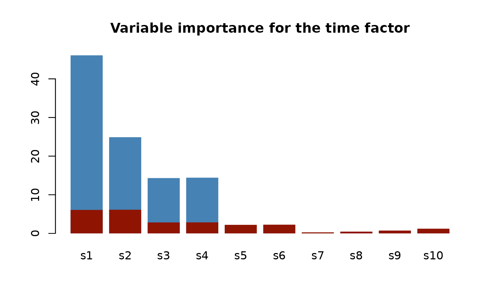
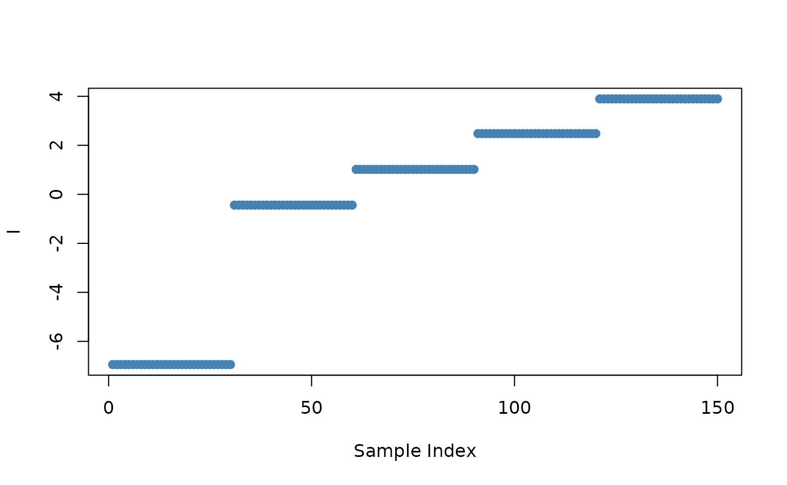
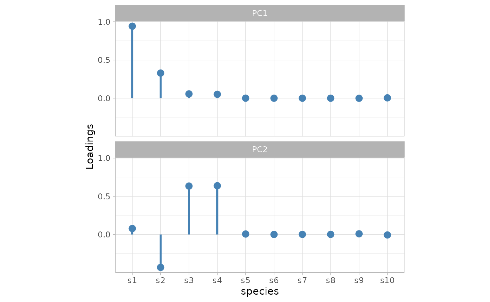

ASCA Decomposition of Synthetic Count Data
Pietro Franceschi
Asca_dec_count_data.RmdIntroduction
To illustrate the use of ASCA in the analysis of count data we will considered a synthetic dataset which is available as a part of the package installation. This vignette will be also used to show how to use gg-style plotting to visualize the results of the ASCA analysis
The dataset
The synthetic data were ***
Experimental design
- 10 count variables (identified as
s1 .. s10) - 2 factor design (5 time points, 3 treatments)
- 10 replicates
The example dataset was designed to have two latent variables for the time factor and one for the treatment.
Considering the 10 variables:
- the first four are responsive to the time factor.
s1ands2mirrors LV1,s3ands4are linked to LV2. -
s5ands6are affected by the treatment factor. -
s1ands2are also sensitive to the interaction. In other words, for them the effect of treatment depends on time. - The remaining variables contain only noise.
The dataset is included in the package as a two element list containing the count matrix synth_count_data$counts and a data frame holding the association between the 150 samples and the design factors (synth_count_data$design)
## load the libraries
library(gASCA)
#> Loading required package: parallel
#> Loading required package: Matrix
library(tidyverse)
#> Warning: replacing previous import 'lifecycle::last_warnings' by
#> 'rlang::last_warnings' when loading 'pillar'
#> Warning: replacing previous import 'lifecycle::last_warnings' by
#> 'rlang::last_warnings' when loading 'tibble'
#> Warning: replacing previous import 'lifecycle::last_warnings' by
#> 'rlang::last_warnings' when loading 'hms'
#> ── Attaching packages ─────────────────────────────────────── tidyverse 1.3.1 ──
#> ✓ ggplot2 3.3.5 ✓ purrr 0.3.4
#> ✓ tibble 3.1.4 ✓ dplyr 1.0.7
#> ✓ tidyr 1.1.3 ✓ stringr 1.4.0
#> ✓ readr 2.0.1 ✓ forcats 0.5.1
#> ── Conflicts ────────────────────────────────────────── tidyverse_conflicts() ──
#> x tidyr::expand() masks Matrix::expand()
#> x dplyr::filter() masks stats::filter()
#> x dplyr::lag() masks stats::lag()
#> x tidyr::pack() masks Matrix::pack()
#> x tidyr::unpack() masks Matrix::unpack()
library(ggrepel)
## load the dataset
data("synth_count_data")
## show a compact representation of the structure of the dataset
str(synth_count_data)
#> List of 2
#> $ counts: int [1:150, 1:10] 0 0 0 1 0 2 1 1 1 0 ...
#> ..- attr(*, "dimnames")=List of 2
#> .. ..$ : NULL
#> .. ..$ : chr [1:10] "s1" "s2" "s3" "s4" ...
#> $ design:'data.frame': 150 obs. of 2 variables:
#> ..$ time : chr [1:150] "t1" "t1" "t1" "t1" ...
#> ..$ treatment: chr [1:150] "A" "A" "A" "A" ...In this synthetic dataset we are dealing with a design with 5 time points and three treatments
## time
unique(synth_count_data$design$time)
#> [1] "t1" "t2" "t3" "t4" "t5"
## treatment
unique(synth_count_data$design$treatment)
#> [1] "A" "B" "C"The following plot shows the distribution of the counts for variable s1 as a function of the design factors
tibble(synth_count_data$design,
data.frame(synth_count_data$counts)) %>%
ggplot() +
geom_point(aes(x = time, y = s1, fill = treatment),
position = position_dodge(width = 0.4), pch = 21, size =3, alpha = 0.7) +
scale_fill_brewer(palette = "Set1", name = "Treatment") +
xlab("Time") +
theme_light() +
ggtitle("Variable S1") +
theme(aspect.ratio = 0.5,
legend.position = "bottom")Illustration of the effects of the experimental design on the counts of Species #1
The effect of time on this variable is clear. Furthermore, time and treatment are also interacting as shown by the strong effect of treatment C at t4
Performing the decomposition
The function which performs the ASCA decomposition is ASCA_decompose and its results are organized in a list. To run the function it is necessary to provide:
- a
matrixor adata.framewith the counts; - a
data.framewith the association between the samples and the design. Beware that numeric columns will results in a decomposition error! - a formula (actually a character vector) which specify the form of the decomposition;
- a
listwith the parameters which will be passed to theglmcall; - a character vector which specifies the type of errors which will be returned by
glm;
The synthetic data we are dealing with are counts so the natural choice is to run a Poisson glm. The formula specifies that we are looking for a 3 term decomposition accounting for the effects of time, treatment and their interaction. Within ASCA-decompose the formula have to be specified following the standard R syntax.
## perform the decomposition
asca0 <- ASCA_decompose(
d = synth_count_data$design,
x = synth_count_data$counts,
f = "time + treatment + time:treatment",
glm_par = list(family = poisson()))Let’s give a look to the structure of the asca0 object
str(asca0)
#> List of 14
#> $ decomposition:List of 3
#> ..$ time : num [1:150, 1:10] -6.95 -6.95 -6.95 -6.95 -6.95 ...
#> .. ..- attr(*, "dimnames")=List of 2
#> .. .. ..$ : chr [1:150] "1" "2" "3" "4" ...
#> .. .. ..$ : chr [1:10] "s1" "s2" "s3" "s4" ...
#> ..$ treatment : num [1:150, 1:10] 1.05 1.05 1.05 1.05 1.05 ...
#> .. ..- attr(*, "dimnames")=List of 2
#> .. .. ..$ : chr [1:150] "1" "2" "3" "4" ...
#> .. .. ..$ : chr [1:10] "s1" "s2" "s3" "s4" ...
#> ..$ time:treatment: num [1:150, 1:10] 4.45 4.45 4.45 4.45 4.45 ...
#> .. ..- attr(*, "dimnames")=List of 2
#> .. .. ..$ : chr [1:150] "1" "2" "3" "4" ...
#> .. .. ..$ : chr [1:10] "s1" "s2" "s3" "s4" ...
#> $ mu : Named num [1:10] 0.936 2.957 4.007 5.002 5.996 ...
#> ..- attr(*, "names")= chr [1:10] "s1" "s2" "s3" "s4" ...
#> $ residuals : num [1:150, 1:10] -0.6 -0.6 -0.6 0.4 -0.6 ...
#> ..- attr(*, "dimnames")=List of 2
#> .. ..$ : chr [1:150] "1" "2" "3" "4" ...
#> .. ..$ : chr [1:10] "s1" "s2" "s3" "s4" ...
#> $ prediction : num [1:150, 1:10] -0.511 -0.511 -0.511 -0.511 -0.511 ...
#> ..- attr(*, "dimnames")=List of 2
#> .. ..$ : chr [1:150] "1" "2" "3" "4" ...
#> .. ..$ : chr [1:10] "s1" "s2" "s3" "s4" ...
#> $ pseudoR2 : Named num [1:10] 0.987 0.995 0.986 0.996 0.997 ...
#> ..- attr(*, "names")= chr [1:10] "s1" "s2" "s3" "s4" ...
#> $ glm_par :List of 1
#> ..$ family:List of 12
#> .. ..$ family : chr "poisson"
#> .. ..$ link : chr "log"
#> .. ..$ linkfun :function (mu)
#> .. ..$ linkinv :function (eta)
#> .. ..$ variance :function (mu)
#> .. ..$ dev.resids:function (y, mu, wt)
#> .. ..$ aic :function (y, n, mu, wt, dev)
#> .. ..$ mu.eta :function (eta)
#> .. ..$ initialize: expression({ if (any(y < 0)) stop("negative values not allowed for the 'Poisson' family") n <- rep.int(1, nobs| __truncated__
#> .. ..$ validmu :function (mu)
#> .. ..$ valideta :function (eta)
#> .. ..$ simulate :function (object, nsim)
#> .. ..- attr(*, "class")= chr "family"
#> $ res_type : chr "response"
#> $ varimp : num [1:10, 1:3] 46.088 24.899 14.319 14.42 0.154 ...
#> ..- attr(*, "dimnames")=List of 2
#> .. ..$ : chr [1:10] "s1" "s2" "s3" "s4" ...
#> .. ..$ : chr [1:3] "time" "treatment" "time:treatment"
#> $ terms_L2 : Named num [1:3] 56.2 25.2 41
#> ..- attr(*, "names")= chr [1:3] "time" "treatment" "time:treatment"
#> $ d :'data.frame': 150 obs. of 2 variables:
#> ..$ time : chr [1:150] "t1" "t1" "t1" "t1" ...
#> ..$ treatment: chr [1:150] "A" "A" "A" "A" ...
#> $ x :'data.frame': 150 obs. of 10 variables:
#> ..$ s1 : int [1:150] 0 0 0 1 0 2 1 1 1 0 ...
#> ..$ s2 : int [1:150] 1 1 3 1 4 3 0 2 2 0 ...
#> ..$ s3 : int [1:150] 13 12 15 16 22 9 16 22 13 13 ...
#> ..$ s4 : int [1:150] 35 43 44 36 33 35 40 39 39 34 ...
#> ..$ s5 : int [1:150] 115 108 88 93 85 107 77 104 77 98 ...
#> ..$ s6 : int [1:150] 88 88 98 95 102 123 94 98 92 99 ...
#> ..$ s7 : int [1:150] 133 175 151 151 129 155 138 152 155 135 ...
#> ..$ s8 : int [1:150] 67 52 50 59 61 61 59 52 59 56 ...
#> ..$ s9 : int [1:150] 14 16 18 21 18 23 23 24 19 12 ...
#> ..$ s10: int [1:150] 8 3 5 6 5 7 8 8 6 10 ...
#> $ f : chr "time + treatment + time:treatment"
#> $ combined : NULL
#> $ linkinv :function (eta)
#> - attr(*, "class")= chr "ASCA_decomposition"For a detailed description of the elements of the list the reader could refer to the documentation. The main output of the function is a list which holds the result of the decomposition (asca0$decomposition). Each matrix matrix contains the expected values estimated by the glm model of the individual variables. Printing the names helps understanding the structure of the array
## matrix associated to the "time" factor
rownames(asca0$decomposition$time)
#> [1] "1" "2" "3" "4" "5" "6" "7" "8" "9" "10" "11" "12"
#> [13] "13" "14" "15" "16" "17" "18" "19" "20" "21" "22" "23" "24"
#> [25] "25" "26" "27" "28" "29" "30" "31" "32" "33" "34" "35" "36"
#> [37] "37" "38" "39" "40" "41" "42" "43" "44" "45" "46" "47" "48"
#> [49] "49" "50" "51" "52" "53" "54" "55" "56" "57" "58" "59" "60"
#> [61] "61" "62" "63" "64" "65" "66" "67" "68" "69" "70" "71" "72"
#> [73] "73" "74" "75" "76" "77" "78" "79" "80" "81" "82" "83" "84"
#> [85] "85" "86" "87" "88" "89" "90" "91" "92" "93" "94" "95" "96"
#> [97] "97" "98" "99" "100" "101" "102" "103" "104" "105" "106" "107" "108"
#> [109] "109" "110" "111" "112" "113" "114" "115" "116" "117" "118" "119" "120"
#> [121] "121" "122" "123" "124" "125" "126" "127" "128" "129" "130" "131" "132"
#> [133] "133" "134" "135" "136" "137" "138" "139" "140" "141" "142" "143" "144"
#> [145] "145" "146" "147" "148" "149" "150"
colnames(asca0$decomposition$time)
#> [1] "s1" "s2" "s3" "s4" "s5" "s6" "s7" "s8" "s9" "s10"The 150 samples are organized along the first dimension, while the decomposition terms span the second dimension. The last dimension holds the experimental variables.
Validation
A permutation based approach has been proposed as a test of the significance of the ASCA decomposition. The rationale behind the idea is to empirically construct a set of null models by repeatedly (and independently) permuting the design labels. These null models can then be used to construct the empirical distribution (and quantiles) of almost all model outcomes.
In the gASCA package the permutation based approach has been implemented. In particular it can be used to assess the significance of the following quantities
- the L2 norm of the decomposition terms, which assess the significance of each model
- the variable importance
- the null distribution of the univariate pseudo-R2, which can be seen as a proxy of the overall model fit for each variable
The ASCA_permutation function, requires as input the results of ASCA_decompose the number of independent permutations (500 by default) and the empirical quantile used to judge the significance (0.95 by default).
## perform the permutation based approach
asca0_validation <- ASCA_permutation(asca0)The following plot shows the results of the validation on the L2 norm of the three decomposition terms.
asca0_validation$L2_qt %>%
as_tibble(rownames = "term") %>%
add_column(actual = asca0$terms_L2) %>%
mutate(term = factor(term, levels = term)) %>%
ggplot() +
geom_point(aes(x = term, y = actual), col = "steelblue", size = 3) +
geom_segment(aes(x = term, y = 0, xend = term, yend = actual), col = "steelblue", lwd = 1) +
geom_point(aes(x = term, y = value), col = "darkred", size = 3) +
ylab("term-L2") + xlab("Term") +
theme_light() +
theme(aspect.ratio = 0.5)
In the previous plot the term L2 norms (blue dots) are compared with their 95th percentile on the 500 permuted dataset (red dots). In all three cases, the observed matrix norm is larger than the one which should be expected by chance and this indicate that the three terms are all significant, as expected for the synthetic dataset.
In therms of variable importance the situation is the following:
asca0$varimp %>%
as_tibble(rownames = "var") %>%
pivot_longer(-var) %>%
left_join(asca0_validation$varimp_qt %>%
as_tibble(rownames = "var") %>%
pivot_longer(-var, values_to = "value_qt")) %>%
mutate(var = factor(var, levels = unique(var))) %>%
mutate(name = factor(name, levels = unique(name))) %>%
ggplot() +
geom_point(aes(x = var, y = value), col = "steelblue", size = 3) +
geom_segment(aes(x = var, y = 0, xend = var, yend = value), col = "steelblue", lwd = 1) +
geom_point(aes(x = var, y = value_qt), col = "darkred", size = 2, pch = 1) +
facet_wrap(~name, scales = "free", nrow = 1) +
ylab("Vecror Norm") + xlab("Variable") +
theme_light() +
theme(aspect.ratio = 0.5)
#> Joining, by = c("var", "name")As before, the red dots indicate the empirical quantiles upon permutation of the design. The picture we get with this analysis is in line to the characteristics of the simulated dataset. In particular.
- As expected the first four variables are responsive to a different extent to the time factor
- S5 and s6 are correctly identified as sensitive to treatment. Unexpectedly, however, also s1 turns out to be responsive to treatment, but remember that s1 was affected by the interaction between the two main factors.
- As far as the interaction is concerned, only s1 seems to be significantly affected, with s2
Univariate model fit
The last parameter which was included in the validation process is the pseudo-R2 of the set of univariate models. In classical ASCA, the inspection and the eigen decomposition of the residual matrix has proven to be useful and informative in identifying unmodeled patterns in the data. Unfortunately, this step it is not necessarily informative in glm based ASCA, since the matrix of residuals in the response space is not always easy to interpret (e.g the error matrix of a poisson ASCA of a matrix of species counts holds the difference between observed and predicted counts).
Here we propose to use a measure of univariate model fit at least to identify the set of variables which are less responsive to the experimental design. For glms, pseudo-\(R^{2}\) is one of the possible measures of fit which is defined comparing the devicence of the fit of the proposed model with the one of a “null” constant model.
\[ R^{2}_{pseudo} = 1 - \frac{deviance_{residuals}}{deviance_{null}} \]
In practical terms, the parameter gets closer to 1 if the deviance of the residuals of the proposed model is smaller than the one of a constant model.
The “significance” of this parameter can also be assessed in the permutation test and the validation is included in the package functionality. In the package, the calculation of the pseudo-\(R^{2}\) for the set of the measured variables is part of the output of the ASCA_decompose function. In the case of the synthetic dataset the trend of the pseudo_\(R^{2}\) for the the variables and the results of the validation are shown in the following plot:
asca0_validation$R2_qt %>%
as_tibble(rownames = "var") %>%
add_column(actual = asca0$pseudoR2) %>%
mutate(var = factor(var, levels = unique(var))) %>%
ggplot() +
geom_point(aes(x = var, y = actual), col = "steelblue", size = 3) +
geom_segment(aes(x = var, y = 0, xend = var, yend = actual), col = "steelblue", lwd = 1) +
geom_point(aes(x = var, y = value), col = "darkred", size = 3, pch = 1) +
ylab("pseudo-R2") + xlab("Variable") +
theme_light() +
theme(aspect.ratio = 0.5)
Also here the blue dots represent the univariate model pseudo-\(R^{2}\), while the red dots shows its null 95th percentile. The first 6 variables shows a large and significant pseudo-\(R^{2}\) and this is not only indicating that they are significantly responding to the design, but also that the proposed model is capturing a large fraction of the data variability. It is also interesting to observe that, not unexpectedly, the univariate null quantiles are similar for all the 10 variables.
It is important to point out that when dealing with a glm with an identity link function, the overall model fit can still be inspected relying on the matrix of the residuals in the response space. As in classical ASCA, a PCA of this matrix is useful to perform a multivariate investigation of the unmodeled structure of the dataset. Bear in mind that in the case of dataset consisting of reasonably large counts, a gaussian modelling of the log-transformed values could give a good representation of the data structure.
Analysis of the decomposition terms
Eigenvectors and Multivariate Decomposition
Let’s now analyse the three decomposition matrices in terms of their multivariate latent factors. Depending on the term these LV can be interpreted as “eigentrends” (for time) or “eigentreatment” (for treatment) and they are actually what we would like to interpret. Remember that the rank of the matrix associated to each factor is determined by the number of levels of each factor because the decomposition matrices are constructed with the model expected values. The number of LVs will be then equal to the number of factors minus one.
As an example, this is the set of predicted values for the time factor of variable s1
plot(asca0$decomposition$time[,"s1"], ylab = "I", xlab = "Sample Index", pch = 19, col = "steelblue")The presence of a limited number of constant values is coherent with the levels of the time factor, while the scale on the y axis shows that predictions are performed in the linear predictor space. Since the time factor has 5 levels the rank of the matrix will be four. We then expect four eigentrends. Their relative importance is proportional to the individual eigenvalues.
The SVD decomposition of the ASCA array is performed by the ASCA_svd function.
asca0_svd <- ASCA_svd(asca0$decomposition)Also here the result is a list with each element holding the results of the svd of the single decomposition terms which have been performed by using the prcomp function of base R. As in a usual PCA analysis the amount of explained variability (square of the standard deviation) can be used to identify how many eigentrends it would be necessary to consider to present an informative representation of the overall matrix. This type of representation is known as scree plot
## here we make a scree plot of the three decomposition terms
map(asca0_svd, ~ .x$sdev %>% as_tibble(., rownames = "PC")) %>%
enframe(name = "term", value = "data") %>%
# mutate(data = map(data,~ .x %>% mutate(value = (value/sum(value))*100))) %>%
unnest(cols = c(data)) %>%
mutate(PC = factor(PC, levels = unique(PC))) %>%
ggplot() +
geom_col(aes(x = PC, y = value^2), fill = "steelblue") +
facet_wrap(~term, scales = "free", ncol = 3) +
ylab("Variances") +
theme_light() +
theme(aspect.ratio = 0.5)The previous plot suggests that two LVs represent good aproximation for all the three factors (actually for treatment 2 LVs are not an approximation)
Let’s start with the time term. Its latent variables can be interpreted as latent “eigentrend” which highlights underlying general patterns shared by group of variables. The best way to highlight that is to plot the separate scores for the first two LVs as a function of the time design factor
asca0_svd$time$x %>%
as_tibble() %>%
mutate(across(everything(),~round(.x,2))) %>% ## this is needed to compensate for computational inaccuracies
add_column(time = synth_count_data$design$time) %>%
unique() %>%
select(time, PC1, PC2) %>%
pivot_longer(starts_with("PC")) %>%
ggplot() +
geom_point(aes(x = time, y = value), col = "steelblue", alpha = 0.7, size = 3) +
geom_line(aes(x = time, y = value, group = name),col = "steelblue", alpha = 0.7) +
geom_hline(yintercept = 0, col = "red", lty = 2) +
facet_wrap(~name, ncol = 2, scales = "free") +
theme_light() + ylab("Scores") +
theme(aspect.ratio = 0.4)The first eigentrend is characterized by a steadily increasing tendency which contrasts with the evolution of the second “U” shaped profile. As in standard pca, their loadings will tell which measured variables are mainly associated to them
asca0_svd$time$rotation %>%
as_tibble(rownames = "species") %>%
mutate(species = factor(species, levels = paste0("s",1:10))) %>%
select(species,PC1,PC2) %>%
pivot_longer(starts_with("PC")) %>%
ggplot() +
geom_point(aes(x = species, y = value), col = "steelblue", size = 3) +
geom_segment(aes(x = species, y = 0, xend = species, yend = value), col = "steelblue", lwd = 1) +
facet_wrap(~name, ncol = 1) +
theme_light() + ylab ("Loadings")+
theme(aspect.ratio = 0.4)The loadings plot indicates that s1 and s1 are highly contributing to the increasing eigentrend, while s3 and s4 mainly characterize the second LV. This is in keeping with the expected characteristics of the synthetic dataset. The real time trends of the measured values for s1 amd s3 are indeed the following.
tibble(synth_count_data$design,
data.frame(synth_count_data$counts)) %>%
select(time, treatment, s1,s3) %>%
pivot_longer(starts_with("s")) %>%
ggplot() +
geom_point(aes(x = time, y = value, fill = treatment),
position = position_dodge(width = 0.4), pch = 21, size =2, alpha = 0.7) +
scale_fill_brewer(palette = "Set1", name = "Treatment") +
facet_wrap(~name, ncol = 2, scales = "free") +
xlab("Time") +
theme_light() +
theme(aspect.ratio = 0.5,
legend.position = "bottom")
In the case of the treatment, we are dealing with only two eigenvectors since the number of levels of this factor is three.
Due to the limited number of levels the plots of the individual eigen-treatments highligths a differantiation between the three levels along PC1, and a separation between A/C and B along PC2.
asca0_svd$treatment$x %>%
as_tibble() %>%
mutate(across(everything(),~round(.x,2))) %>% ## this is needed to compensate for computational differences across the glm estimations
add_column(treatment = synth_count_data$design$treatment) %>%
unique() %>%
select(treatment, PC1, PC2) %>%
pivot_longer(starts_with("PC")) %>%
ggplot() +
geom_point(aes(x = treatment, y = value), col = "steelblue", alpha = 0.7, size = 3) +
geom_line(aes(x = treatment, y = value, group = name),col = "steelblue", alpha = 0.7) +
geom_hline(yintercept = 0, col = "red", lty = 2) +
facet_wrap(~name, ncol = 1, scales = "free") +
theme_light() + ylab("Scores in response space")+
theme(aspect.ratio = 0.4)The same line of reasoning can be applied also to the interpretation of the LVs of the time:treatment factors, but the interpretation of the LV associated to the interaction terms is not straightforward. Combining two or more decomposition terms prior to SVD could be an informative workaround to the problem. In particular, combining the time and time:treatment could highlight the role of the treatment in shaping the time trends.
Combining terms
The function ASCA_combine_terms allows the combination of different factor matrices. The function accepts as input the output of an ASCA_decomposition and a character vector specifying which terms should be combined.
## combine two terms
asca0_comb <- ASCA_combine_terms(asca0, c("time","time:treatment"))
## perform the svd of the combined decomposition
asca0_comb_svd <- ASCA_svd(asca0_comb$decomposition)In terms of the eigenvalues of the LVs:
## here we use the base pscree plot
plot(asca0_comb_svd$`time+time:treatment`, main = "time + time:treatment", col = "steelblue")The rank of the matrix here is larger (10), but the major trends are still captured by the first two components. Their eigentrends are plot in the following figure:
asca0_comb_svd$`time+time:treatment`$x %>%
as_tibble() %>%
mutate(across(everything(),~round(.x,2))) %>% ## this is needed to compensate for computational inaccuracies
add_column(time = synth_count_data$design$time,
treatment = synth_count_data$design$treatment) %>%
unique() %>%
select(time,treatment, PC1, PC2) %>%
pivot_longer(starts_with("PC")) %>%
ggplot() +
geom_point(aes(x = time, y = value, col = treatment), alpha = 0.7, size = 3) +
geom_line(aes(x = time, y = value, col = treatment, group = interaction(name,treatment)), alpha = 0.7) +
geom_hline(yintercept = 0, col = "red", lty = 2) +
facet_wrap(~name, ncol = 2, scales = "free") +
theme_light() +
theme(aspect.ratio = 0.4)Here the time dependent interplay between time and treatment along the first component is clear. Treatment “C” is responsible of a modification in the time profile of the first eigentrend. In terms of loadings, the picture is similar to the previous one (the flip in the sign of the loadings of eig2 is the result of the sign indetermination for svd). If one focusses on eig1 (which accounts for almost the 90% of the matrix variance), s1 and s2 are almost the only contributors and this highlights the influence of time and time:treatment on the measured intensities of these two variables.
asca0_comb_svd$`time+time:treatment`$rotation %>%
as_tibble(rownames = "species") %>%
mutate(species = factor(species, levels = paste0("s",1:10))) %>%
select(species,PC1,PC2) %>%
pivot_longer(starts_with("PC")) %>%
ggplot() +
geom_point(aes(x = species, y = value), col = "steelblue", size = 3) +
geom_segment(aes(x = species, y = 0, xend = species, yend = value), col = "steelblue", lwd = 1) +
facet_wrap(~name, ncol = 1) +
theme_light() + ylab ("Loadings")+
theme(aspect.ratio = 0.4)
The role of S1 in determining eig1 can be seen in the original data after log transformation.
tibble(synth_count_data$design,
data.frame(synth_count_data$counts)) %>%
mutate(across(starts_with("s"), ~log(.x))) %>%
select(time,treatment,s1) %>%
filter(is.finite(s1)) %>%
ggplot() +
geom_point(aes(x = time, y = s1, fill = treatment),
position = position_dodge(width = 0.4), pch = 21, size =3, alpha = 0.7) +
scale_fill_brewer(palette = "Set1", name = "Treatment") +
xlab("Time") +
theme_light() +
ggtitle("Variable S1") +
theme(aspect.ratio = 0.5,
legend.position = "bottom")
Here the green dots of treatment C are absent in t1 (so C is “negatively” contributing at t1), while they get larger than their blue and red counterparts in t3, t4 and - marginally- t5. Treatment C has then a steeper increasing trend, as highlighted by the first eigen-trend of the combined ASCA.